Creating Functions
A function is a named block of code you can call whenever you need it. Instead of copying the same loop every time you want a square, you define it once in a function and call it by name.
A function definition has three parts:
- the keyword
func - a name you choose (e.g.
drawSquare), followed by parentheses() - a body in braces
{ }— the code that runs when the function is called
// Define the function once... func drawSquare() { for _ in 1...4 { pen.addLine(distance: 100) pen.turn(degrees: 90) } } // ...then call it as many times as you like. drawSquare() pen.move(distance: 120) drawSquare() pen.move(distance: 120) drawSquare()
Functions promote DRY code — Don't Repeat Yourself. If you need to change the square size, you only change it in one place and every call updates automatically.
Where does the pen end up after drawing a square? The four turns add up to 4 × 90° = 360° — a full rotation. That means the pen finishes facing the same direction it started, and because the four sides form a closed shape, it's back at the starting position. This is why you can calldrawSquare()twice with apen.movein between and get two separate squares in a row.
Defining vs. calling. Writingfunc drawSquare() { ... }defines the function — nothing is drawn yet. WritingdrawSquare()on its own line calls it — that's what actually runs the code. You define once; you call as many times as you need.

| Concept | Connection |
|---|---|
| Functions & Modelling | A function in programming is analogous to a function in mathematics: it encapsulates a process. Calling a function repeatedly mirrors evaluating f(x) for multiple inputs — though here, with no parameters yet, it's a constant function that always draws the same shape. |
Octagons
Write a function called drawOctagon() that draws a regular octagon (8 sides, exterior angle 45°). Call it three times to draw a row of three octagons.
Hint: a regular polygon's exterior angle is 360° ÷ number of sides. For an octagon that's 360° ÷ 8 = 45°. If you imagine walking along the edge of the shape, you turn by the exterior angle at each corner — the interior angle (135° for an octagon) is what you'd measure inside the corner, not what you turn through.
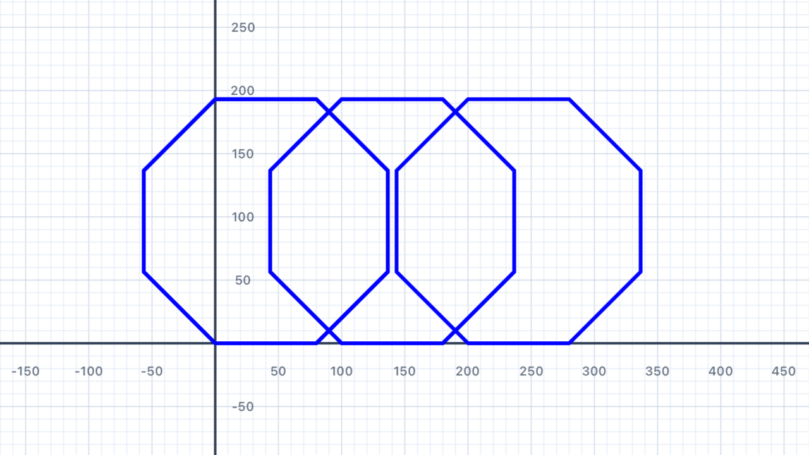
Why360° / n? If you walked all the way around the edge of a closed regular polygon, your total turning would have to add up to one full rotation — 360° — so you'd end up facing the same direction you started. Divide that total evenly acrossncorners and each turn is360° / n. Triangle: 120°. Square: 90°. Pentagon: 72°. Hexagon: 60°. Octagon: 45°. The pattern works for any regular polygon.
Watch your octagon size! A regular octagon with side lengthsis roughly2.4 × swide. Withs = 40that's about 97 units — so moving110between calls leaves a ~13-unit gap. If you use a bigger side length, make sure to move by more than2.4 × sor your octagons will overlap.
func drawOctagon() { for _ in 1...8 { pen.addLine(distance: 40) pen.turn(degrees: 45) } } // Three octagons in a row, separated by pen.move drawOctagon() pen.move(distance: 110) drawOctagon() pen.move(distance: 110) drawOctagon()
| Concept | Connection |
|---|---|
| Geometry — Regular Polygons | A regular octagon has 8 sides and exterior angles of 360° / 8 = 45°. Its interior angles are 180° − 45° = 135°. The exterior angle formula 360° / n applies to any regular polygon — this is the first glimpse of a pattern that generalises in Section 04. |
Parameters
Functions become far more powerful when they accept parameters — values passed in by the caller. The function uses the parameter name like a variable inside its body.
func drawSquare(size: Double) { for _ in 1...4 { pen.addLine(distance: size) pen.turn(degrees: 90) } } // Draw squares of different sizes: drawSquare(size: 50) drawSquare(size: 100) drawSquare(size: 150)
You can have multiple parameters, separated by commas. Swift uses argument labels at the call site for readability:
func drawRectangle(width: Double, height: Double) { for _ in 1...2 { pen.addLine(distance: width) pen.turn(degrees: 90) pen.addLine(distance: height) pen.turn(degrees: 90) } } drawRectangle(width: 200, height: 100)
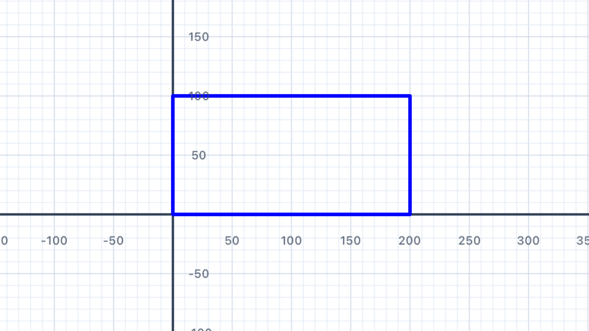
| Concept | Connection |
|---|---|
| Functions & Modelling | A parameterised function is a direct model of a mathematical function f(x). The parameter is the input, and the drawn shape is the output. Multiple parameters map to multi-variable functions f(x, y). |
Different Sizes
Write a function drawRegularPolygon(sides: Int, sideLength: Double) that draws any regular polygon. Use it to draw a triangle, square, pentagon, hexagon, and octagon, each a different size, arranged in a row.
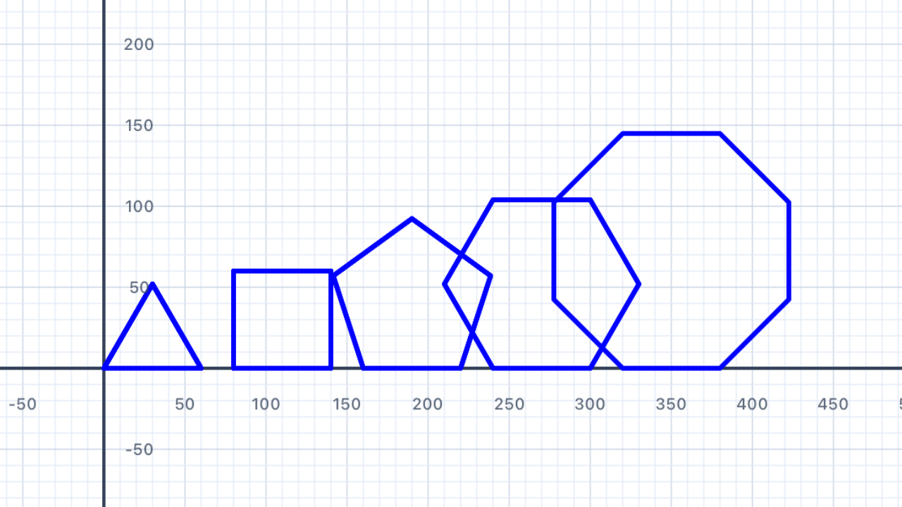
func drawRegularPolygon(sides: Int, sideLength: Double) { let angle = 360.0 / Double(sides) for _ in 1...sides { pen.addLine(distance: sideLength) pen.turn(degrees: angle) } } drawRegularPolygon(sides: 3, sideLength: 60) pen.move(distance: 80) drawRegularPolygon(sides: 4, sideLength: 60) pen.move(distance: 80) drawRegularPolygon(sides: 5, sideLength: 60) pen.move(distance: 80) drawRegularPolygon(sides: 6, sideLength: 60) pen.move(distance: 80) drawRegularPolygon(sides: 8, sideLength: 60)
| Concept | Connection |
|---|---|
| Geometry — Regular Polygons | A single parameterised function replaces six separate loop blocks. The exterior angle formula 360°/n shows a direct inverse relationship between number of sides and turn angle. |
Different Shapes
Write a function drawRectangle(width: Double, height: Double, color: Color) that draws a filled rectangle of any size and colour. Use it to create a colourful grid of rectangles — 3 columns, 3 rows, each a different colour and proportion.
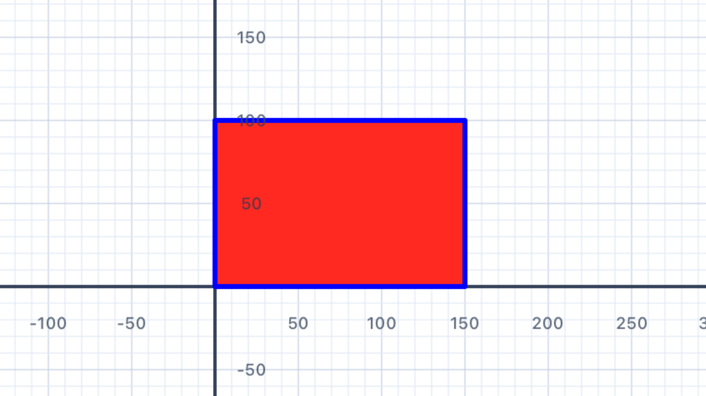
func drawRectangle(width: Double, height: Double, color: Color) { let shape = Pen() shape.fillColor = color for _ in 1...2 { shape.addLine(distance: width) shape.turn(degrees: 90) shape.addLine(distance: height) shape.turn(degrees: 90) } pen.addShape(pen: shape) }
| Concept | Connection |
|---|---|
| Geometry — Area & Perimeter | Rectangles with the same perimeter can have different areas (and vice versa). Experimenting with width and height demonstrates this inverse relationship. |
Denmark
The Danish flag (Dannebrog) is a red rectangle with a white cross. The cross divides the flag into four rectangles. Write a function to draw the flag, with parameters for overall width and height.
Traditional proportions: 28 × 21 units; cross bars are 4 units wide; vertical bar is offset left of centre.
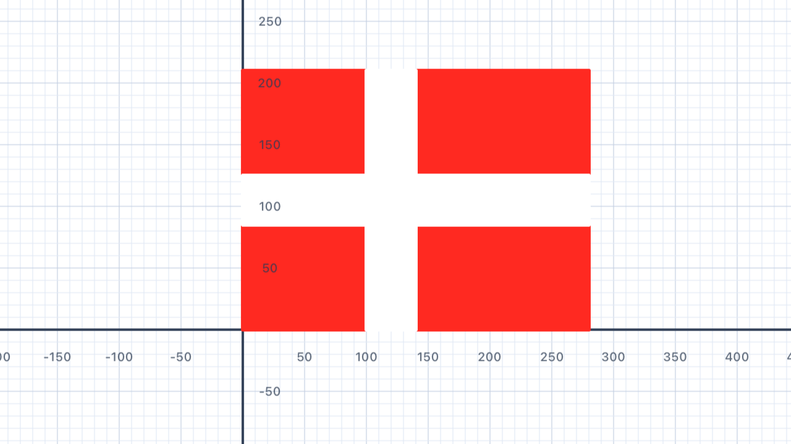
Watch out for these bugs:let p = Pen()must bevar p = Pen()(Pens are mutated via method calls), andpen.addShape(pen: p)is wrong —addShape(pen: p)is a free function, not a method onpen. Nordic crosses are also offset, not centred: Denmark's vertical bar sits at x = 10 out of 28, dividing the flag into 10 | 4 | 14.
func drawDenmark(scale: Double) { // Red background (28 × 21) var bg = Pen() bg.fillColor = .red bg.penColor = .red for _ in 1...2 { bg.addLine(distance: 28 * scale) bg.turn(degrees: 90) bg.addLine(distance: 21 * scale) bg.turn(degrees: 90) } addShape(pen: bg) // White horizontal bar (full width, 4 units tall, centred vertically) var hBar = Pen() hBar.penColor = .white hBar.fillColor = .white hBar.goto(x: 0, y: 8.5 * scale) for _ in 1...2 { hBar.addLine(distance: 28 * scale) hBar.turn(degrees: 90) hBar.addLine(distance: 4 * scale) hBar.turn(degrees: 90) } addShape(pen: hBar) // White vertical bar (full height, 4 units wide, offset left) var vBar = Pen() vBar.penColor = .white vBar.fillColor = .white vBar.goto(x: 10 * scale, y: 0) for _ in 1...2 { vBar.addLine(distance: 4 * scale) vBar.turn(degrees: 90) vBar.addLine(distance: 21 * scale) vBar.turn(degrees: 90) } addShape(pen: vBar) } drawDenmark(scale: 10)
| Concept | Connection |
|---|---|
| Ratio & Proportion | Flag dimensions use fixed ratios (28:21 = 4:3). Scaling by a constant multiplier preserves proportions — an application of ratio and scale factor. |
Sweden
The Swedish flag is blue with a yellow Scandinavian cross (same offset proportions as Denmark but with a blue background and gold cross). Adapt your Denmark function to draw the Swedish flag.
Proportions: 16 × 10 units; vertical bar 2 units wide at position 5 from left; horizontal bar 2 units wide at position 4 from top.
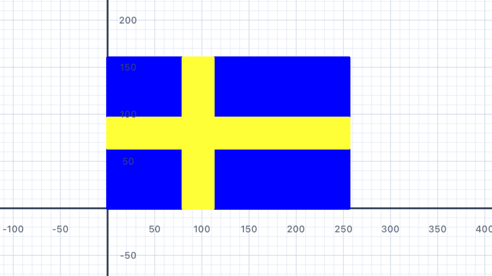
Same pattern as Denmark — Nordic cross, offset toward the hoist, two separate white bars for the horizontal and vertical. For a 16 × 10 flag, the vertical bar sits at x = 5 (splitting 5 | 2 | 9) and the horizontal bar at y = 4 (splitting 4 | 2 | 4). Two flags, two dimensions, same structure — this is geometric similarity.
func drawSweden(scale: Double) { // Blue background (16 × 10) var bg = Pen() bg.fillColor = .blue for _ in 1...2 { bg.addLine(distance: 16 * scale) bg.turn(degrees: 90) bg.addLine(distance: 10 * scale) bg.turn(degrees: 90) } addShape(pen: bg) // Yellow horizontal bar (full width, 2 units tall, y = (10 - 2)/2 = 4) var hBar = Pen() hBar.penColor = .yellow hBar.fillColor = .yellow hBar.goto(x: 0, y: 4 * scale) for _ in 1...2 { hBar.addLine(distance: 16 * scale) hBar.turn(degrees: 90) hBar.addLine(distance: 2 * scale) hBar.turn(degrees: 90) } addShape(pen: hBar) // Yellow vertical bar (full height, 2 units wide, offset left at x = 5) var vBar = Pen() vBar.penColor = .yellow vBar.fillColor = .yellow vBar.goto(x: 5 * scale, y: 0) for _ in 1...2 { vBar.addLine(distance: 2 * scale) vBar.turn(degrees: 90) vBar.addLine(distance: 10 * scale) vBar.turn(degrees: 90) } addShape(pen: vBar) } drawSweden(scale: 8)
| Concept | Connection |
|---|---|
| Ratio & Proportion | Identifying how Denmark and Sweden share a cross design but with different proportions reinforces the concept of scaled geometric similarity. |
Norway
Norway's flag has a red background with a blue cross outlined in white. Build on your Scandinavian cross function to add a second, slightly wider white cross drawn underneath the blue one.
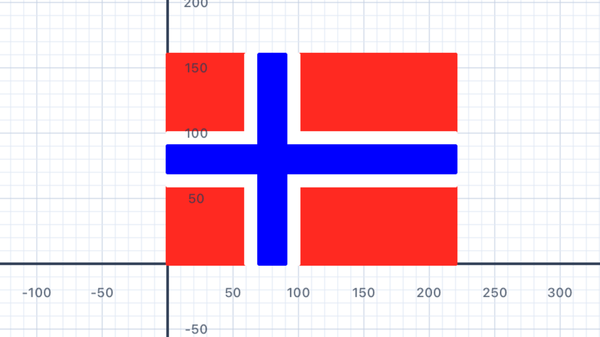
Layered rendering (painter's algorithm). The white border around the blue cross isn't drawn as an outline — it's what's left over from the white layer after the narrower blue cross is painted on top. Paint wider → paint narrower → the difference becomes the border. This trick is used throughout the chapter (Union Jack fimbriation, Tonga, Switzerland).
func drawNorway(scale: Double) { // Norway proportions: 22 × 16 // Cross centre: x = 6 from left, thicknesses: white = 4, blue = 2 // --- Helper: draws a rectangle at a given position --- func drawRect(x: Double, y: Double, w: Double, h: Double, color: UIColor) { var p = Pen() p.penColor = color p.fillColor = color p.goto(x: x * scale, y: y * scale) for _ in 1...2 { p.addLine(distance: w * scale) p.turn(degrees: 90) p.addLine(distance: h * scale) p.turn(degrees: 90) } addShape(pen: p) } // Layer 1: Red background (22 × 16) drawRect(x: 0, y: 0, w: 22, h: 16, color: .red) // Layer 2: White cross (thickness 4) drawRect(x: 0, y: 6, w: 22, h: 4, color: .white) // horizontal drawRect(x: 6, y: 0, w: 4, h: 16, color: .white) // vertical // Layer 3: Blue cross (thickness 2, centred within white) drawRect(x: 0, y: 7, w: 22, h: 2, color: .blue) // horizontal drawRect(x: 7, y: 0, w: 2, h: 16, color: .blue) // vertical } drawNorway(scale: 6)
| Concept | Connection |
|---|---|
| Geometry — Concentric Shapes | Drawing a white cross wider than the blue cross creates an outline via layering — analogous to the concept of border width as the difference between outer and inner dimensions. |
St Andrew
The flag of Scotland features a white diagonal cross (saltire) on a blue background. Draw two diagonal lines connecting opposite corners of the flag's rectangle.
Hint: use trigonometry (or Pythagoras) to calculate the diagonal length from the width and height.
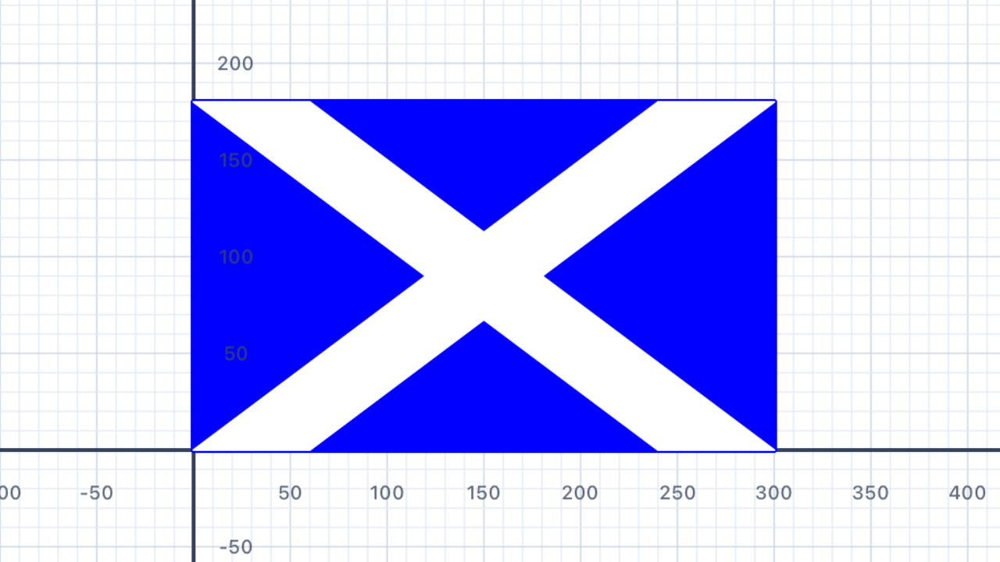
Why not just draw two thick diagonal lines? Stroked lines with lineWidth have line caps that extend beyond their endpoints — the white would spill past every corner of the flag. Use a filled polygon instead: a 4-vertex parallelogram with corners pinned to the flag's corners and short edges along the top and bottom. A polygon can never escape its own vertices.
Whyt = w/5? For a 5:3 flag (30 × 18), an edge offset oft = 6 = w/5produces a perpendicular bar thickness of exactlyh/5 = 3.6— the traditional 1/5-of-hoist proportion for the Scottish flag. This is a nice accident of the 5:3 ratio wheresqrt((4w/5)² + h²) = w, so the thickness formula simplifies beautifully.
import Foundation import UIKit func drawStAndrew(scale: Double) { // St Andrew's Cross (Saltire): 5:3 ratio, e.g. 30 × 18 let w: Double = 30 * scale let h: Double = 18 * scale // Saltire "thickness" measured as offset along the horizontal edges. // For a 5:3 flag, t = w/5 → perpendicular bar thickness of h/5. let t: Double = w / 5 // --- Blue background --- var bg = Pen() bg.fillColor = .blue for _ in 1...2 { bg.addLine(distance: w) bg.turn(degrees: 90) bg.addLine(distance: h) bg.turn(degrees: 90) } addShape(pen: bg) // --- White saltire bar 1: bottom-left → top-right --- // Vertices (CCW): BL corner → bottom edge offset → TR corner → top edge offset let bar1 = Polygon(vertices: [ Point(x: 0, y: 0), // bottom-left corner Point(x: t, y: 0), // bottom edge, offset right by t Point(x: w, y: h), // top-right corner Point(x: w - t, y: h) // top edge, offset left by t ]) addFilledPolygon(bar1, fillColor: .white, borderColor: .white, lineWidth: 1) // --- White saltire bar 2: top-left → bottom-right --- let bar2 = Polygon(vertices: [ Point(x: 0, y: h), // top-left corner Point(x: t, y: h), // top edge, offset right by t Point(x: w, y: 0), // bottom-right corner Point(x: w - t, y: 0) // bottom edge, offset left by t ]) addFilledPolygon(bar2, fillColor: .white, borderColor: .white, lineWidth: 1) } drawStAndrew(scale: 8)
| Concept | Connection |
|---|---|
| Pythagoras' Theorem | The diagonal of a rectangle with width w and height h has length √(w² + h²). This is a direct application of Pythagoras' theorem. |
St Patrick
The St Patrick's Cross is a red diagonal saltire (like St Andrew's but red on white). Draw it using the same approach as St Andrew, but with a red diagonal and white background.
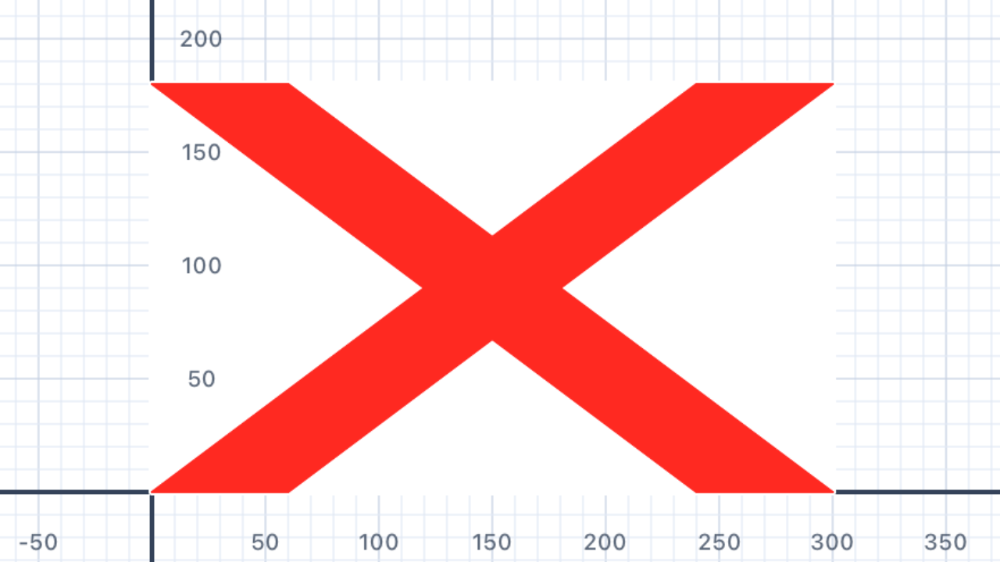
Rule of two — time to consider a refactor. St Andrew and St Patrick differ only in their colours. After writing both, you should recognise that a single drawSaltireFlag(bgColor:, crossColor:) helper would eliminate the duplication. This is the first "two instances" moment in the chapter — keep an eye out for a third (the Union Jack saltires) and extract!
import Foundation import UIKit func drawStPatrick(scale: Double) { // St Patrick's Cross: 5:3 ratio, e.g. 30 × 18 let w: Double = 30 * scale let h: Double = 18 * scale let t: Double = w / 5 // --- White background --- var bg = Pen() bg.fillColor = .white bg.penColor = .white for _ in 1...2 { bg.addLine(distance: w) bg.turn(degrees: 90) bg.addLine(distance: h) bg.turn(degrees: 90) } addShape(pen: bg) // --- Red saltire bar 1: bottom-left → top-right --- let bar1 = Polygon(vertices: [ Point(x: 0, y: 0), Point(x: t, y: 0), Point(x: w, y: h), Point(x: w - t, y: h) ]) addFilledPolygon(bar1, fillColor: .red, borderColor: .red, lineWidth: 1) // --- Red saltire bar 2: top-left → bottom-right --- let bar2 = Polygon(vertices: [ Point(x: 0, y: h), Point(x: t, y: h), Point(x: w, y: 0), Point(x: w - t, y: 0) ]) addFilledPolygon(bar2, fillColor: .red, borderColor: .red, lineWidth: 1) } drawStPatrick(scale: 8)
| Concept | Connection |
|---|---|
| Geometry — Similarity | St Patrick's Cross is geometrically identical to St Andrew's — the same shape, different colours. This demonstrates that geometric properties are independent of colour. |
St George
England's flag is a white background with a red cross (like Denmark but centred). Use your Scandinavian cross function with centred proportions.
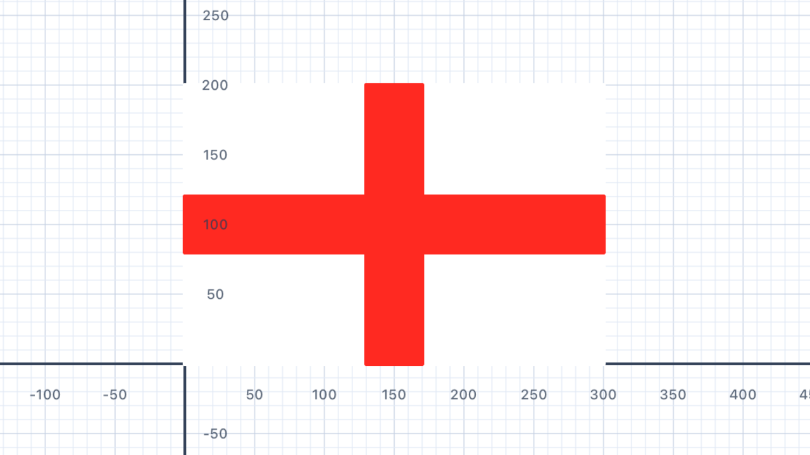
Centring formula. For a centred cross of thicknesston a flag of widthwand heighth, the horizontal bar sits aty = (h − t) / 2and the vertical bar atx = (w − t) / 2. For a 30 × 20 flag with thickness 4, that'sx = 13andy = 8. Unlike Denmark/Sweden/Norway where the cross is offset toward the hoist, St George's is symmetric on both axes — D₂ symmetry (2 reflection axes + 180° rotation).
import Foundation import UIKit func drawStGeorge(scale: Double) { // St George's Cross: 30 × 20, cross width 4, centred func drawRect(x: Double, y: Double, w: Double, h: Double, color: UIColor) { var p = Pen() p.penColor = color p.fillColor = color p.goto(x: x * scale, y: y * scale) for _ in 1...2 { p.addLine(distance: w * scale) p.turn(degrees: 90) p.addLine(distance: h * scale) p.turn(degrees: 90) } addShape(pen: p) } // White background (30 × 20) drawRect(x: 0, y: 0, w: 30, h: 20, color: .white) // Red cross — centred both ways drawRect(x: 0, y: 8, w: 30, h: 4, color: .red) // horizontal drawRect(x: 13, y: 0, w: 4, h: 20, color: .red) // vertical } drawStGeorge(scale: 5)
| Concept | Connection |
|---|---|
| Geometry — Line Symmetry | St George's Cross has two lines of symmetry (horizontal and vertical) and 4-fold rotational symmetry — a symmetry group of order 4. |
Union Jack
The Union Jack is a combination of St George's Cross, St Andrew's Cross, and St Patrick's Cross. Use your functions from sections 09–11 to layer all three on the same flag. The order is: blue background → St Andrew (white) → St Patrick (red, thinner) → St George (red, centred).
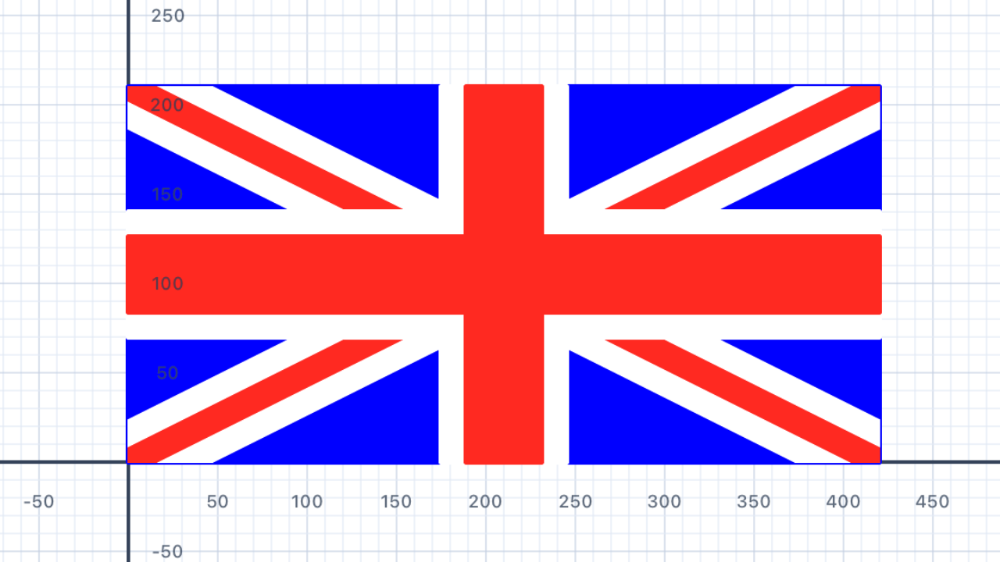
Why hexagons, not parallelograms? A single saltire works fine as a 4-vertex parallelogram (as in St Andrew), but the Union Jack layers two saltires of different thicknesses — white on top of red. A parallelogram's long edges have direction(w − t, h)which depends on the thicknesst, so the white and red bars end up at subtly different angles and the red appears to "twist" inside the white. The 6-vertex hexagon pins the long edges to direction(w, h)exactly — the true flag diagonal — regardless of thickness.
Spec-driven proportions. All four thicknesses are fractions of the hoist: white saltire =h/5, red saltire =h/15, white cross backing =h/3, red cross =h/5. The white borders around every red shape come out to exactlyh/15on each side — that's what makes the fimbriation look visually consistent across the whole flag.
import Foundation import UIKit func drawUnionJack(scale: Double) { // Union Jack: 2:1 ratio, e.g. 60 × 30 let w: Double = 60 * scale let h: Double = 30 * scale let diag: Double = sqrt(w*w + h*h) // Heraldic thicknesses (as fractions of the hoist) let whiteSaltireT: Double = h / 5 // St Andrew — 1/5 of hoist let redSaltireT: Double = h / 15 // St Patrick — 1/15 of hoist let whiteCrossT: Double = h / 3 // St George backing — 1/3 of hoist let redCrossT: Double = h / 5 // St George — 1/5 of hoist // --- Helpers --- func drawRect(x: Double, y: Double, w rw: Double, h rh: Double, color: UIColor) { var p = Pen() p.penColor = color p.fillColor = color p.goto(x: x, y: y) for _ in 1...2 { p.addLine(distance: rw) p.turn(degrees: 90) p.addLine(distance: rh) p.turn(degrees: 90) } addShape(pen: p) } // Draws one saltire as two hexagons — one per diagonal — with long edges // EXACTLY parallel to the flag's main diagonal (w, h). T = perpendicular // thickness. eh/ew = offsets where the strip hits the flag edges. func drawSaltire(color: UIColor, perpendicular T: Double) { let eh = T * diag / (2 * h) let ew = T * diag / (2 * w) // Bar 1: bottom-left → top-right diagonal (hexagon, CCW) let bar1 = Polygon(vertices: [ Point(x: 0, y: 0), // BL corner Point(x: eh, y: 0), // bottom edge entry Point(x: w, y: h - ew), // right edge exit Point(x: w, y: h), // TR corner Point(x: w - eh, y: h), // top edge exit Point(x: 0, y: ew) // left edge entry ]) addFilledPolygon(bar1, fillColor: color, borderColor: color, lineWidth: 1) // Bar 2: top-left → bottom-right diagonal (hexagon, CCW) let bar2 = Polygon(vertices: [ Point(x: 0, y: h), // TL corner Point(x: 0, y: h - ew), // left edge entry Point(x: w - eh, y: 0), // bottom edge exit Point(x: w, y: 0), // BR corner Point(x: w, y: ew), // right edge exit Point(x: eh, y: h) // top edge entry ]) addFilledPolygon(bar2, fillColor: color, borderColor: color, lineWidth: 1) } func drawCenteredCross(color: UIColor, thickness t: Double) { drawRect(x: 0, y: (h - t) / 2, w: w, h: t, color: color) drawRect(x: (w - t) / 2, y: 0, w: t, h: h, color: color) } // --- Layer order (bottom → top) --- // 1. Blue background drawRect(x: 0, y: 0, w: w, h: h, color: .blue) // 2. White St Andrew saltire drawSaltire(color: .white, perpendicular: whiteSaltireT) // 3. Red St Patrick saltire (centred in the white, parallel to it) drawSaltire(color: .red, perpendicular: redSaltireT) // 4. White backing for St George (fimbriation) drawCenteredCross(color: .white, thickness: whiteCrossT) // 5. Red St George cross drawCenteredCross(color: .red, thickness: redCrossT) } drawUnionJack(scale: 4)
| Concept | Connection |
|---|---|
| Geometry — Composition | The Union Jack is a superposition of three geometric designs. Function composition in code mirrors geometric composition — combining simple shapes to create complex ones. |
Filled Star
Write a function drawStar(points: Int, size: Double, color: Color) that draws a filled star with any number of points. Use it to draw three stars of different sizes side by side.
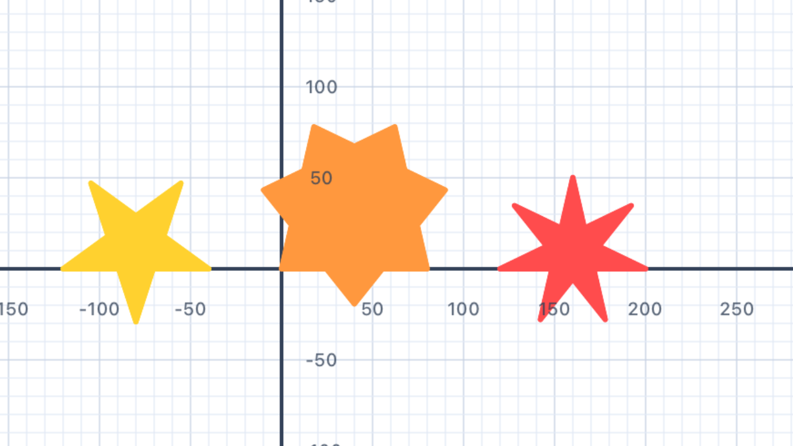
Why 720°? A regular polygon path winds once (360°). A star polygon {5/2} winds twice — the path overlaps itself, completing two loops before returning to the start. So the total turn angle overnvertices is720°, giving720/nper vertex. More generally, a {n/k} star polygon windsktimes and has a turn angle of360·k/n.
Which {n/k} values are valid? A star polygon is a single-pass star only whengcd(n, k) = 1andk ≥ 2. So {5/2}, {7/2}, {7/3}, {9/2}, {9/4} all work. But {6/2} has gcd 2 and degenerates to a triangle traced twice — for a 6-pointed Star of David you need two overlapping triangles, not a single {n/k} polygon.
import UIKit func drawStarNK(at position: Point, n: Int, k: Int, size: Double, color: UIColor) { // General star polygon {n/k} turn angle = 360 × k / n // Produces a valid single-pass star when gcd(n, k) = 1 and k ≥ 2 let angle = 360.0 * Double(k) / Double(n) var star = Pen() star.penColor = color star.fillColor = color star.goto(x: position.x, y: position.y) for _ in 0..<n { star.addLine(distance: size) star.turn(degrees: angle) } addShape(pen: star) } drawStarNK(at: Point(x: -120, y: 0), n: 5, k: 2, size: 80, color: .systemYellow) // classic 5-star drawStarNK(at: Point(x: 0, y: 0), n: 7, k: 2, size: 80, color: .systemOrange) // 7/2 star drawStarNK(at: Point(x: 120, y: 0), n: 7, k: 3, size: 80, color: .systemRed) // 7/3 star (denser)
| Concept | Connection |
|---|---|
| Geometry — Star Polygons | A {n/2} star polygon turns 2×360°/n at each vertex. The turn angle formula derives from the exterior angle theorem for star polygons. |
Australia
The Australian flag has a blue background, the Union Jack in the top-left, a large 7-pointed star below it, and the Southern Cross (5 stars) on the right. Use your Union Jack and star functions to draw a simplified version.
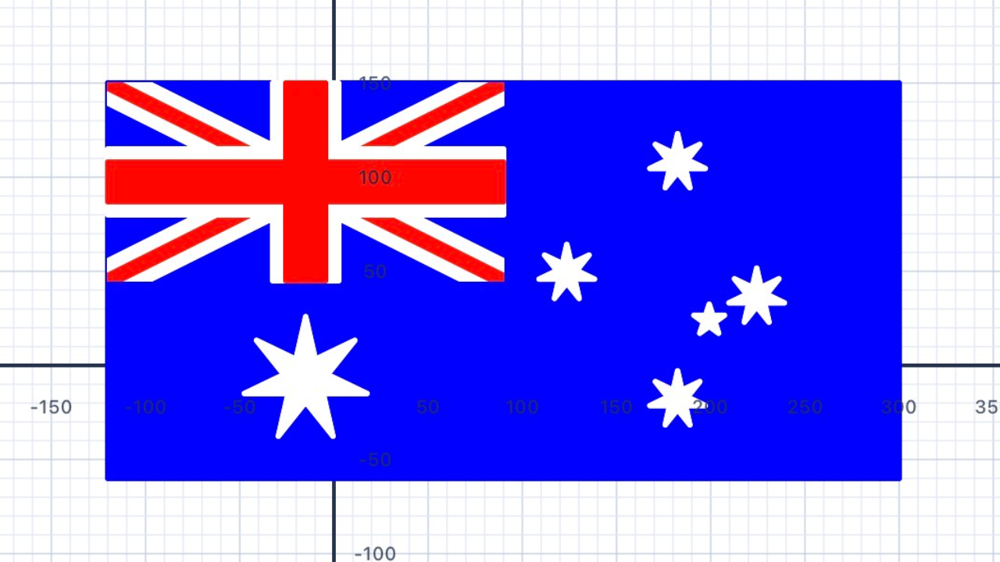
IntroducingdrawStarCentered. Section 13'sdrawStarNKpositions a star by its starting vertex, which is awkward when you need to place a star at a specific geometric point (like the centre of a flag element).drawStarCenteredtakes the star's centre directly and orients one vertex straight up — exactly what flag composition needs. It's derived analytically, so it works for any valid {n/k}.
Why {7/3} for the Commonwealth Star? The real Australian flag has distinctly spiky stars with deep valleys between the points — that's {7/3}, the densest valid 7-point star. {7/2} is gentler and looks wrong. BecausedrawStarCenteredtakesnandkas parameters, switching from gentle to spiky is a one-line change. The Southern Cross uses {7/3} for the 4 large stars and {5/2} for Epsilon Crucis.
Canton scaling. The Union Jack canton is exactly half the flag's width and half its height. BecausedrawUnionJackat scale 1 produces a 60 × 30 flag, passingscale / 2produces a (30·scale) × (15·scale) canton — which matches w/2 × h/2 of the 60 × 30 Australian flag. Same proportions, half the size: geometric similarity through scaling.
import Foundation import UIKit // ============================================================ // Star polygon {n/k} centred at a point, oriented point-up. // Cleaner than drawStarNK for composition — pass the centre. // ============================================================ func drawStarCentered(at center: Point, n: Int, k: Int, size: Double, color: UIColor) { // Circumradius: s = 2R·sin(πk/n) ⇒ R = s/(2·sin(πk/n)) let R = size / (2 * sin(.pi * Double(k) / Double(n))) // Place V₀ at top of circle (point-up), aim pen at V₁. // atan2 of (V₁ − V₀) simplifies to 180° + 180°k/n. let initialHeadingDeg = 180.0 + 180.0 * Double(k) / Double(n) let turnDeg = 360.0 * Double(k) / Double(n) var star = Pen() star.penColor = color star.fillColor = color star.goto(x: center.x, y: center.y + R) star.turn(degrees: initialHeadingDeg) for _ in 0..<n { star.addLine(distance: size) star.turn(degrees: turnDeg) } addShape(pen: star) } // ============================================================ // Union Jack — now accepts a position // ============================================================ func drawUnionJack(at pos: Point, scale: Double) { let w: Double = 60 * scale let h: Double = 30 * scale let diag: Double = sqrt(w*w + h*h) let whiteSaltireT: Double = h / 5 let redSaltireT: Double = h / 15 let whiteCrossT: Double = h / 3 let redCrossT: Double = h / 5 func drawRect(x: Double, y: Double, w rw: Double, h rh: Double, color: UIColor) { var p = Pen() p.penColor = color p.fillColor = color p.goto(x: pos.x + x, y: pos.y + y) for _ in 1...2 { p.addLine(distance: rw) p.turn(degrees: 90) p.addLine(distance: rh) p.turn(degrees: 90) } addShape(pen: p) } func drawSaltire(color: UIColor, perpendicular T: Double) { let eh = T * diag / (2 * h) let ew = T * diag / (2 * w) let bar1 = Polygon(vertices: [ Point(x: pos.x, y: pos.y), Point(x: pos.x + eh, y: pos.y), Point(x: pos.x + w, y: pos.y + h - ew), Point(x: pos.x + w, y: pos.y + h), Point(x: pos.x + w - eh, y: pos.y + h), Point(x: pos.x, y: pos.y + ew) ]) addFilledPolygon(bar1, fillColor: color, borderColor: color, lineWidth: 1) let bar2 = Polygon(vertices: [ Point(x: pos.x, y: pos.y + h), Point(x: pos.x, y: pos.y + h - ew), Point(x: pos.x + w - eh, y: pos.y), Point(x: pos.x + w, y: pos.y), Point(x: pos.x + w, y: pos.y + ew), Point(x: pos.x + eh, y: pos.y + h) ]) addFilledPolygon(bar2, fillColor: color, borderColor: color, lineWidth: 1) } func drawCenteredCross(color: UIColor, thickness t: Double) { drawRect(x: 0, y: (h - t) / 2, w: w, h: t, color: color) drawRect(x: (w - t) / 2, y: 0, w: t, h: h, color: color) } // Layer order (bottom → top) drawRect(x: 0, y: 0, w: w, h: h, color: .blue) drawSaltire(color: .white, perpendicular: whiteSaltireT) drawSaltire(color: .red, perpendicular: redSaltireT) drawCenteredCross(color: .white, thickness: whiteCrossT) drawCenteredCross(color: .red, thickness: redCrossT) } // ============================================================ // AUSTRALIAN FLAG // ============================================================ func drawAustralia(at pos: Point, scale: Double) { let w: Double = 60 * scale let h: Double = 30 * scale // 1. Blue background var bg = Pen() bg.penColor = .blue bg.fillColor = .blue bg.goto(x: pos.x, y: pos.y) for _ in 1...2 { bg.addLine(distance: w) bg.turn(degrees: 90) bg.addLine(distance: h) bg.turn(degrees: 90) } addShape(pen: bg) // 2. Union Jack canton (top-left quarter, scale/2) drawUnionJack(at: Point(x: pos.x, y: pos.y + h / 2), scale: scale / 2) // 3. Commonwealth Star — {7/3} for the spiky-heptagram look drawStarCentered( at: Point(x: pos.x + w / 4, y: pos.y + h / 4), n: 7, k: 3, size: h * 0.31, color: .white ) // 4. Southern Cross — large stars {7/3}, Epsilon {5/2} let largeSize: Double = h * 0.14 let smallSize: Double = h / 13 // Gamma Crucis (top) drawStarCentered( at: Point(x: pos.x + 0.72 * w, y: pos.y + 0.80 * h), n: 7, k: 3, size: largeSize, color: .white ) // Beta Crucis (left) drawStarCentered( at: Point(x: pos.x + 0.58 * w, y: pos.y + 0.52 * h), n: 7, k: 3, size: largeSize, color: .white ) // Delta Crucis (right) drawStarCentered( at: Point(x: pos.x + 0.82 * w, y: pos.y + 0.46 * h), n: 7, k: 3, size: largeSize, color: .white ) // Alpha Crucis (bottom) drawStarCentered( at: Point(x: pos.x + 0.72 * w, y: pos.y + 0.20 * h), n: 7, k: 3, size: largeSize, color: .white ) // Epsilon Crucis (small 5-point) drawStarCentered( at: Point(x: pos.x + 0.76 * w, y: pos.y + 0.40 * h), n: 5, k: 2, size: smallSize, color: .white ) } drawAustralia(at: Point(x: -120, y: -60), scale: 7)
| Concept | Connection |
|---|---|
| Geometry — Scale & Position | Fitting the Union Jack into one quadrant requires halving its dimensions — a scale factor of 0.5. Positions are calculated relative to flag dimensions using fractions. |
Netherlands
The Dutch flag is three equal horizontal stripes: red (top), white (middle), blue (bottom). Write a function drawTricolour(color1: Color, color2: Color, color3: Color, width: Double, height: Double) and draw the Netherlands flag.
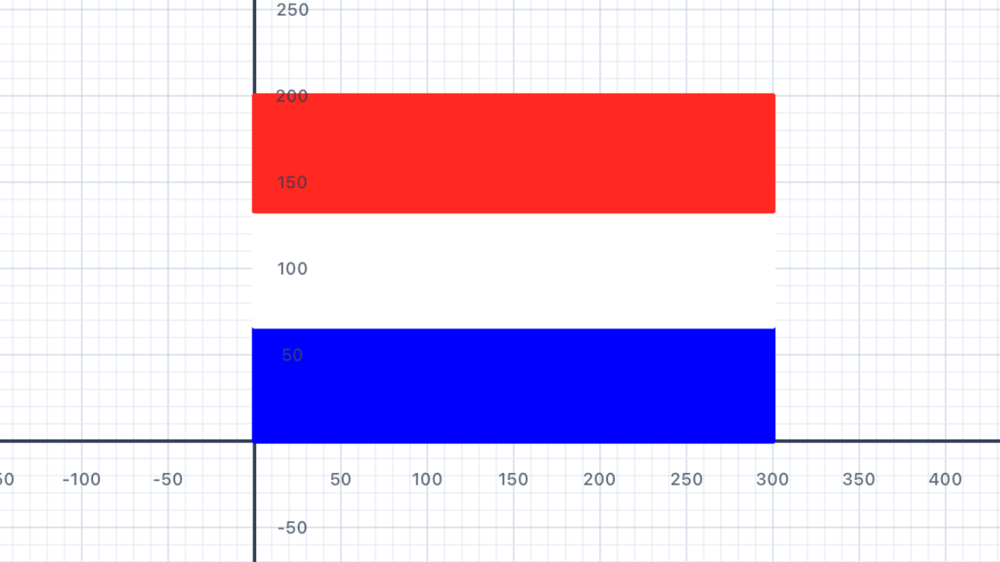
Y increases upward! Because the coordinate system has +y going up, the bottom stripe lives aty = 0and the top stripe aty = 2 × stripeH. Students who write stripes top-to-bottom end up with the flag upside down. ThedrawTricolourfunction below takes colours in reading order (top, middle, bottom) but draws them bottom-up to match the coordinate system.
Avoidpen.move + pen.turnnavigation. Using a shared pen withturn(270); move(40); turn(90)between stripes relies on global state and breaks the moment you draw two shapes in a row. Usegoto(x:, y:)to position each stripe absolutely — it's stateless, composable, and much easier to debug.
import Foundation import UIKit // --- Foundation helper: draws one filled stripe at (x, y) --- func drawStripe(x: Double, y: Double, width w: Double, height h: Double, color: UIColor) { var p = Pen() p.penColor = color p.fillColor = color p.goto(x: x, y: y) for _ in 1...2 { p.addLine(distance: w) p.turn(degrees: 90) p.addLine(distance: h) p.turn(degrees: 90) } addShape(pen: p) } // --- Reusable tricolour helper: 3 equal horizontal stripes --- // color1 = TOP, color2 = MIDDLE, color3 = BOTTOM. // y increases upward, so the BOTTOM stripe is drawn first. func drawTricolour(color1: UIColor, color2: UIColor, color3: UIColor, width: Double, height: Double) { let stripeH = height / 3 drawStripe(x: 0, y: 0, width: width, height: stripeH, color: color3) drawStripe(x: 0, y: stripeH, width: width, height: stripeH, color: color2) drawStripe(x: 0, y: 2 * stripeH, width: width, height: stripeH, color: color1) } // --- Dutch flag: red (top), white (middle), blue (bottom), 3:2 ratio --- func drawNetherlands(scale: Double) { drawTricolour( color1: .red, // top color2: .white, // middle color3: .blue, // bottom width: 30 * scale, height: 20 * scale ) } drawNetherlands(scale: 6)
| Concept | Connection |
|---|---|
| Geometry — Area | Three equal horizontal stripes each occupy 1/3 of the total area. Total area = width × height; each stripe area = width × (height/3). |
France
The French tricolour has three vertical stripes: blue, white, red. Reuse your stripe function from the Netherlands exercise, but rotate it 90° for vertical stripes.
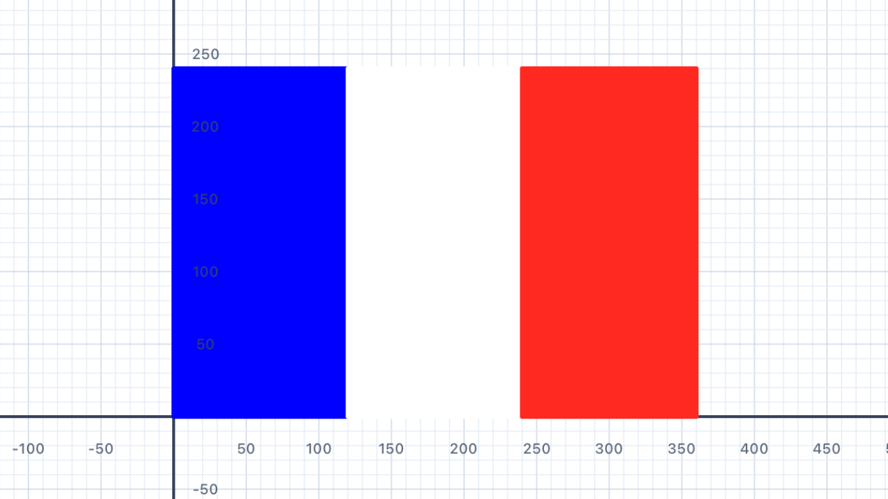
The "rotate 90°" idea, properly. The exercise hint says "swap width and height" — that's almost right but not quite. Swapping the parameters ofdrawTricolourstill divides the (now-swapped) height by 3, producing horizontal stripes in a different aspect ratio. The correct transformation is to swap which axis gets divided and which gets stepped along: dividewidthby 3 (notheight) and step alongx(noty). The cleanest expression of this is a separatedrawTricolourVerticalfunction — same three lines, with(x, y)and(w, h)roles swapped.
import Foundation import UIKit // drawStripe is the same helper from Section 15 Netherlands. // Repeated here for a self-contained France solution. func drawStripe(x: Double, y: Double, width w: Double, height h: Double, color: UIColor) { var p = Pen() p.penColor = color p.fillColor = color p.goto(x: x, y: y) for _ in 1...2 { p.addLine(distance: w) p.turn(degrees: 90) p.addLine(distance: h) p.turn(degrees: 90) } addShape(pen: p) } // --- 3 equal VERTICAL stripes --- // color1 = LEFT (hoist), color2 = MIDDLE, color3 = RIGHT (fly). // Each stripe has FULL height and 1/3 width; step along x, not y. func drawTricolourVertical(color1: UIColor, color2: UIColor, color3: UIColor, width: Double, height: Double) { let stripeW = width / 3 drawStripe(x: 0, y: 0, width: stripeW, height: height, color: color1) drawStripe(x: stripeW, y: 0, width: stripeW, height: height, color: color2) drawStripe(x: 2 * stripeW, y: 0, width: stripeW, height: height, color: color3) } // --- French flag: blue (hoist), white, red (fly), 3:2 ratio --- func drawFrance(scale: Double) { drawTricolourVertical( color1: .blue, // hoist (left) color2: .white, // middle color3: .red, // fly (right) width: 30 * scale, height: 20 * scale ) } drawFrance(scale: 6)
| Concept | Connection |
|---|---|
| Geometry — Transformations | Rotating the stripe from horizontal to vertical is a 90° transformation. The same function with swapped width/height parameters achieves this in code. |
Positions
Update your flag functions to accept an x and y parameter so the flag can be drawn at any position on the canvas. Draw the flags of France, Netherlands, and Denmark side by side on the same canvas using positions.
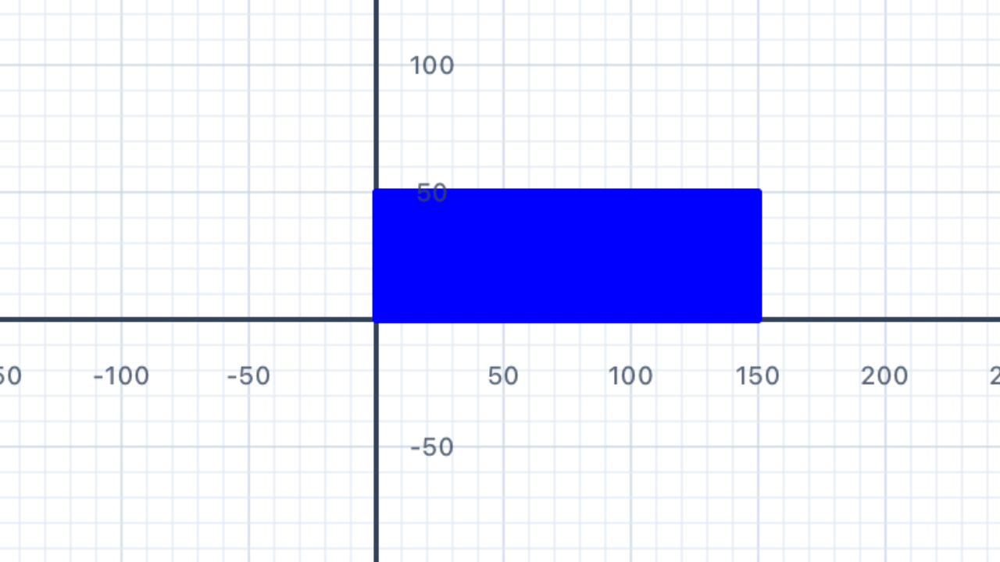
This is wheredrawRectAtis born. Up to Section 16, each flag was either drawing its own rectangles inline (Denmark/Sweden/Norway/St George) or using thedrawStripehelper from Netherlands/France which drew at origin only. Section 17 generalises both into one helper:drawRectAt(at: Point, w:, h:, color:)that takes aPointfor position. From Section 18 onward, almost every flag uses this helper — keep it at the top of your playground file.
Why pass aPointinstead of separatexandy? APointis a single value you can store in a variable, put in an array, or compute from other points. Separatexandyparameters force you to pass two numbers everywhere and can't be abstracted over. This is the difference between thinking "a location" (a single concept) and "two numbers" (two concepts). It matters once you start composing drawings.
import Foundation import UIKit // Filled rectangle at an absolute position. // This single helper replaces every inline rectangle loop from Sections 06–16. func drawRectAt(at pos: Point, w: Double, h: Double, color: UIColor) { var p = Pen() p.penColor = color p.fillColor = color p.goto(x: pos.x, y: pos.y) for _ in 1...2 { p.addLine(distance: w) p.turn(degrees: 90) p.addLine(distance: h) p.turn(degrees: 90) } addShape(pen: p) } // Now each flag function takes (at: Point, scale: Double) and uses drawRectAt. // Example: France, Netherlands, Denmark side by side on the same canvas. func drawFrance(at pos: Point, scale: Double) { let w: Double = 30 * scale let h: Double = 20 * scale let stripe = w / 3 drawRectAt(at: Point(x: pos.x, y: pos.y), w: stripe, h: h, color: .blue) drawRectAt(at: Point(x: pos.x + stripe, y: pos.y), w: stripe, h: h, color: .white) drawRectAt(at: Point(x: pos.x + 2 * stripe, y: pos.y), w: stripe, h: h, color: .red) } func drawNetherlands(at pos: Point, scale: Double) { let w: Double = 30 * scale let h: Double = 20 * scale let stripe = h / 3 drawRectAt(at: Point(x: pos.x, y: pos.y + 2 * stripe), w: w, h: stripe, color: .red) drawRectAt(at: Point(x: pos.x, y: pos.y + stripe), w: w, h: stripe, color: .white) drawRectAt(at: Point(x: pos.x, y: pos.y), w: w, h: stripe, color: .blue) } func drawDenmark(at pos: Point, scale: Double) { let w: Double = 28 * scale let h: Double = 21 * scale drawRectAt(at: Point(x: pos.x, y: pos.y), w: w, h: h, color: .red) drawRectAt(at: Point(x: pos.x, y: pos.y + 8.5 * scale), w: w, h: 4 * scale, color: .white) drawRectAt(at: Point(x: pos.x + 10 * scale, y: pos.y), w: 4 * scale, h: h, color: .white) } // Three flags side by side, centred around origin drawFrance( at: Point(x: -105, y: -20), scale: 2) drawNetherlands(at: Point(x: -35, y: -20), scale: 2) drawDenmark( at: Point(x: 35, y: -21), scale: 2)
| Concept | Connection |
|---|---|
| Coordinate Geometry | Specifying x and y positions is the Cartesian coordinate system applied to canvas layout. Moving to position (x, y) mirrors plotting a point on the coordinate plane. |
Switzerland
The Swiss flag is a red square with a white cross made from two equal rectangles overlapping at the centre. The cross is centred, and the rectangles have a 1:6 proportion relative to the flag size. Draw it using your rectangle function.
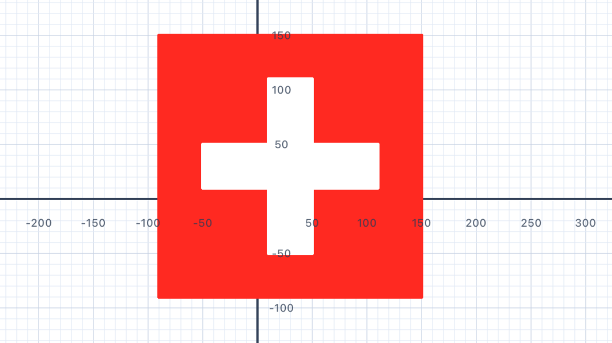
D₄ symmetry — the only one in the chapter. Switzerland is the only flag with full dihedral symmetry of order 8: four rotations (0°, 90°, 180°, 270°) and four reflections (horizontal, vertical, both diagonals). You need both a square flag and a centred cross with equal-width arms — neither alone is sufficient. Every other "centred cross" flag (St George) is on a non-square rectangle and loses the diagonal reflections.
Inclusion–exclusion for the cross area. The cross is two overlapping rectangles: a horizontal bar and a vertical bar that share a square patch at the centre. Cross area = 2 × (arm × long) − arm². The − arm² subtracts the double-counted centre square. You don't need this to draw the flag (painting over is fine), but it's the simplest non-trivial example of inclusion–exclusion.
import Foundation import UIKit // Filled rectangle at an absolute position (from Section 17) func drawRectAt(at pos: Point, w: Double, h: Double, color: UIColor) { var p = Pen() p.penColor = color p.fillColor = color p.goto(x: pos.x, y: pos.y) for _ in 1...2 { p.addLine(distance: w) p.turn(degrees: 90) p.addLine(distance: h) p.turn(degrees: 90) } addShape(pen: p) } func drawSwitzerland(at pos: Point, scale: Double) { // Swiss flag: 1:1 square, cross arms 1/6 wide × 2/3 long let size: Double = 30 * scale let arm = size / 6 // cross thickness let long = size * 2 / 3 // length of each cross bar // 1. Red square background drawRectAt(at: pos, w: size, h: size, color: .red) // 2. White horizontal bar (long × arm, centred) drawRectAt( at: Point(x: pos.x + (size - long) / 2, y: pos.y + (size - arm) / 2), w: long, h: arm, color: .white ) // 3. White vertical bar (arm × long, centred) drawRectAt( at: Point(x: pos.x + (size - arm) / 2, y: pos.y + (size - long) / 2), w: arm, h: long, color: .white ) } // Draw centred on the canvas origin drawSwitzerland(at: Point(x: -90, y: -90), scale: 6)
| Concept | Connection |
|---|---|
| Geometry — Symmetry & Area | The Swiss cross has 4-fold rotational symmetry and 4 lines of reflection symmetry. The overlapping rectangles share an area, so the cross area = 2 × (arm × long) − arm² (subtract the double-counted centre square). |
Tonga
Tonga's flag is red with a white rectangle in the top-left corner containing a red cross. Use your positioned rectangle function and cross function to draw it.
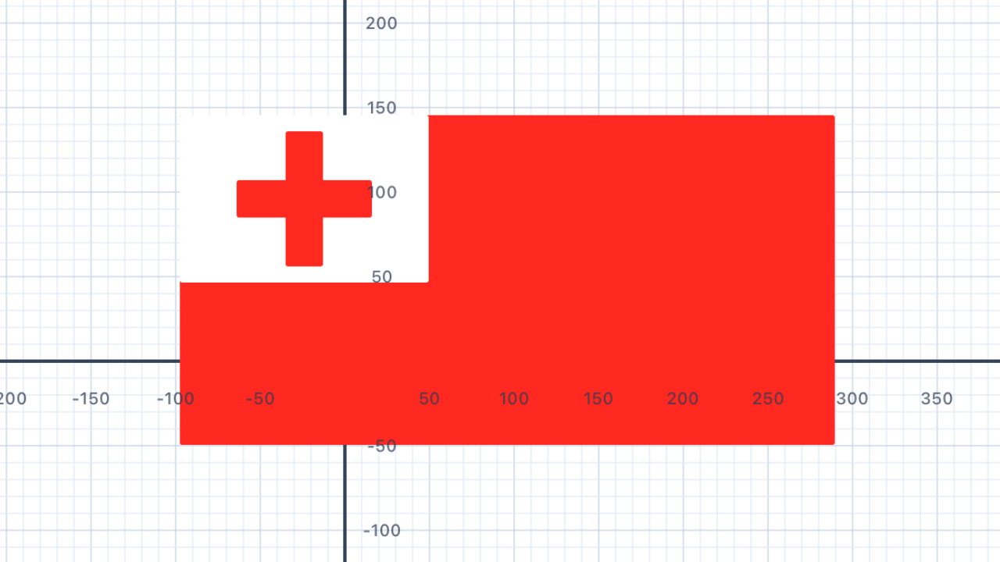
Nested coordinate frames. Tonga is the first flag with two "top-lefts" to reason about. First, the canton sits at the flag's top-left:cantonPos.y = pos.y + h − cantonH(remember, y increases upward, so the "top" is the highest y). Second, the cross is centred inside the canton using the formula(boxDim − shapeDim) / 2. This is the simplest example of local vs. world coordinates — the cross is positioned relative to the canton, which is positioned relative to the flag.
GeneralisingdrawCrossInBox. Switzerland (Section 18) had a square box. Tonga has a rectangular canton. The centring helper works for any(boxW, boxH)— pass in whatever dimensions the containing shape has. Section 18 could even be retrofitted to call this helper too.
import Foundation import UIKit // Filled rectangle at an absolute position (from Section 17) func drawRectAt(at pos: Point, w: Double, h: Double, color: UIColor) { var p = Pen() p.penColor = color p.fillColor = color p.goto(x: pos.x, y: pos.y) for _ in 1...2 { p.addLine(distance: w) p.turn(degrees: 90) p.addLine(distance: h) p.turn(degrees: 90) } addShape(pen: p) } // --- Generalised helper: centred plus-cross inside any rectangular box --- // (works for both Switzerland and Tonga's canton) func drawCrossInBox(at pos: Point, boxW: Double, boxH: Double, arm: Double, long: Double, color: UIColor) { // Horizontal bar: length `long`, thickness `arm` drawRectAt( at: Point(x: pos.x + (boxW - long) / 2, y: pos.y + (boxH - arm) / 2), w: long, h: arm, color: color ) // Vertical bar: thickness `arm`, length `long` drawRectAt( at: Point(x: pos.x + (boxW - arm) / 2, y: pos.y + (boxH - long) / 2), w: arm, h: long, color: color ) } // --- Tonga: red field, white canton top-left, red cross inside canton --- func drawTonga(at pos: Point, scale: Double) { // Flag: 2:1 ratio (e.g. 48 × 24) let w: Double = 48 * scale let h: Double = 24 * scale // Canton: ~3/8 of flag width × 1/2 of flag height, top-left let cantonW = w * 3 / 8 let cantonH = h / 2 let cantonPos = Point(x: pos.x, y: pos.y + h - cantonH) // Red cross proportions within the canton let arm = cantonH / 5 let long = cantonH * 4 / 5 // 1. Red background drawRectAt(at: pos, w: w, h: h, color: .red) // 2. White canton (top-left) drawRectAt(at: cantonPos, w: cantonW, h: cantonH, color: .white) // 3. Red cross centred inside the canton drawCrossInBox( at: cantonPos, boxW: cantonW, boxH: cantonH, arm: arm, long: long, color: .red ) } drawTonga(at: Point(x: -96, y: -48), scale: 4)
| Concept | Connection |
|---|---|
| Geometry — Composite Shapes | The white canton is a fraction of the total flag area. Calculating positions of shapes within other shapes applies fractional reasoning and proportional thinking. |
Puerto Rico
Puerto Rico's flag has five alternating red and white horizontal stripes, with a blue equilateral triangle on the left containing a white star. Combine your stripe function, triangle loop, and star function to draw it.
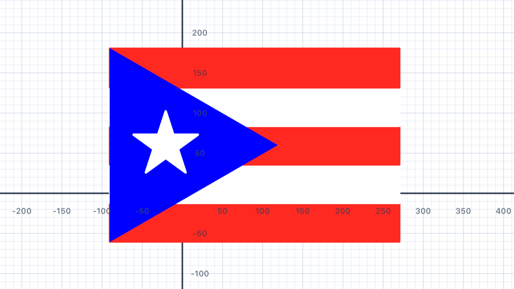
IntroducingdrawStarCentered. This is the first exercise where you need to place a star at a specific geometric point — the centroid of the blue triangle.drawStarNKfrom Section 13 positions by the starting vertex and faces east, which is awkward for composition.drawStarCenteredtakes the centre directly and orients point-up. Formulas:R = size / (2·sin(πk/n))and initial heading =180° + 180°k/n. Both derived analytically — no magic constants.
sin(60°) = √3/2. This constant comes up everywhere: hexagons, 30-60-90 triangles, honeycombs, equilateral triangles. Derive it yourself: bisect an equilateral triangle of sidesdown the middle. The half-base iss/2, the hypotenuse iss, and by Pythagoras the height is√(s² − (s/2)²) = √(3s²/4) = s·√3/2. For Puerto Rico, the triangle's base = flag height, so the apex extends horizontally byh·√3/2 ≈ 0.866·h.
Triangle centroid. For any triangle, the centroid (centre of mass) is the average of the three vertices: ((ax+bx+cx)/3, (ay+by+cy)/3). For an equilateral triangle specifically, the centroid coincides with the incenter, circumcenter, and orthocenter — all four triangle centres collapse to the same point. This only happens for equilateral triangles.
import Foundation import UIKit // ===================================================================== // SHARED HELPERS // ===================================================================== // Filled rectangle at an absolute position func drawRectAt(at pos: Point, w: Double, h: Double, color: UIColor) { var p = Pen() p.penColor = color p.fillColor = color p.goto(x: pos.x, y: pos.y) for _ in 1...2 { p.addLine(distance: w) p.turn(degrees: 90) p.addLine(distance: h) p.turn(degrees: 90) } addShape(pen: p) } // General star polygon {n/k} centred at a point, oriented point-up. // Works for any valid {n/k} — {5/2} pentagram, {7/2} heptagram, {7/3} spiky. func drawStarCentered(at center: Point, n: Int, k: Int, size: Double, color: UIColor) { // Circumradius: chord length s = 2R·sin(πk/n) ⇒ R = s/(2·sin(πk/n)) let R = size / (2 * sin(.pi * Double(k) / Double(n))) // Place V₀ at top of circle (point-up), aim pen at V₁. let initialHeadingDeg = 180.0 + 180.0 * Double(k) / Double(n) let turnDeg = 360.0 * Double(k) / Double(n) var star = Pen() star.penColor = color star.fillColor = color star.goto(x: center.x, y: center.y + R) star.turn(degrees: initialHeadingDeg) for _ in 0..<n { star.addLine(distance: size) star.turn(degrees: turnDeg) } addShape(pen: star) } // ===================================================================== // PUERTO RICO // ===================================================================== func drawPuertoRico(at pos: Point, scale: Double) { // Flag: 3:2 ratio (e.g. 60 × 40) let w: Double = 60 * scale let h: Double = 40 * scale let stripeH = h / 5 // 1. Five horizontal stripes — red/white/red/white/red (bottom → top) let stripes: [UIColor] = [.red, .white, .red, .white, .red] for (i, color) in stripes.enumerated() { drawRectAt( at: Point(x: pos.x, y: pos.y + Double(i) * stripeH), w: w, h: stripeH, color: color ) } // 2. Blue equilateral triangle, base on left edge, apex pointing right // Apex horizontal offset = side × sin(60°) = h × √3 / 2 let apexX = pos.x + h * sqrt(3) / 2 let topLeft = Point(x: pos.x, y: pos.y + h) let botLeft = Point(x: pos.x, y: pos.y) let apex = Point(x: apexX, y: pos.y + h / 2) let tri = Triangle(a: topLeft, b: botLeft, c: apex) addFilledTriangle( tri, fillColor: .blue, borderColor: .blue, lineWidth: 1 ) // 3. White 5-pointed star at the triangle's centroid // Centroid of equilateral triangle = (pos.x + h√3/6, pos.y + h/2) let centroidX = pos.x + h * sqrt(3) / 6 let centroidY = pos.y + h / 2 let starSize = h / 3 drawStarCentered( at: Point(x: centroidX, y: centroidY), n: 5, k: 2, size: starSize, color: .white ) } drawPuertoRico(at: Point(x: -90, y: -60), scale: 8)
| Concept | Connection |
|---|---|
| Geometry — Triangles | The triangle is equilateral with its apex touching the right edge of the canton. Its height equals the flag height; side length = height / sin(60°) = height × 2/√3. |
United States
The US flag has 13 alternating red and white horizontal stripes, and a blue canton in the top-left with 50 stars arranged in staggered rows. Use loops, your stripe function, and your star function to draw a simplified version.
Challenge: arrange the 50 stars in the correct 6/5 alternating row pattern (6 rows of 5, 5 rows of 4 with offset).
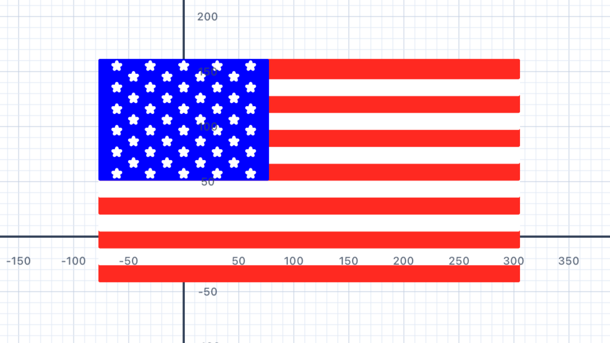
Parity determines the endpoint colours. With 13 stripes (odd), both the bottom stripe (i = 0) and the top stripe (i = 12) are red — because i % 2 == 0 is true for both. If the flag had an even number of stripes, the two ends would be different colours. This is why the US flag has 7 red stripes and 6 white, not 6-and-6.
Two ternary expressions encode the entire star grid.starsInRow = (row % 2 == 0) ? 5 : 4picks the count for each row, andxOffset = (row % 2 == 0) ? colSpacing/2 : colSpacingshifts odd rows by half a column so they sit between the stars of adjacent even rows. This creates a rhombic (brick-wall) lattice — the same pattern that appears in crystallography, hexagonal close-packing, and actual brick walls.
Top-down row indexing in a bottom-up coordinate system. The loop treatsrow = 0as the top of the canton, butyincreases upward. The conversion:rowY = cantonPos.y + cantonH − (row + 0.5) × rowSpacing. The+ 0.5centres each star in its row's vertical band.
import Foundation import UIKit // Assumes drawRectAt and drawStarCentered from earlier sections are defined. func drawUSA(at pos: Point, scale: Double) { // Flag: 19:10 ratio let w: Double = 38 * scale let h: Double = 20 * scale let stripeH = h / 13 // 1. 13 stripes, bottom-up — red/white alternating, both ends red for i in 0..<13 { let color: UIColor = (i % 2 == 0) ? .red : .white drawRectAt( at: Point(x: pos.x, y: pos.y + Double(i) * stripeH), w: w, h: stripeH, color: color ) } // 2. Blue canton — top-left, covering the top 7 stripes, 0.4 × flag width let cantonW = w * 0.4 let cantonH = 7 * stripeH let cantonPos = Point(x: pos.x, y: pos.y + h - cantonH) drawRectAt(at: cantonPos, w: cantonW, h: cantonH, color: .blue) // 3. 50 stars — 11 rows alternating 5/4/5/4/... let rows = 11 let maxStars = 5 let rowSpacing = cantonH / Double(rows) let colSpacing = cantonW / Double(maxStars) let starSize = rowSpacing * 0.7 for row in 0..<rows { let starsInRow = (row % 2 == 0) ? 5 : 4 // 5-star rows: offset by half a column // 4-star rows: offset by a full column let xOffset = (row % 2 == 0) ? colSpacing / 2 : colSpacing // Row 0 = top of canton; y decreases as row increases let rowY = cantonPos.y + cantonH - (Double(row) + 0.5) * rowSpacing for col in 0..<starsInRow { let starX = cantonPos.x + xOffset + Double(col) * colSpacing // drawStarCentered takes the centre directly — no offsets needed. drawStarCentered( at: Point(x: starX, y: rowY), n: 5, k: 2, size: starSize, color: .white ) } } } drawUSA(at: Point(x: -76, y: -40), scale: 4)
| Concept | Connection |
|---|---|
| Patterns & Nested Loops | The staggered star arrangement is generated by a nested loop where the inner count and x-offset depend on whether the row index is even or odd — connecting number patterns to geometric layout. |